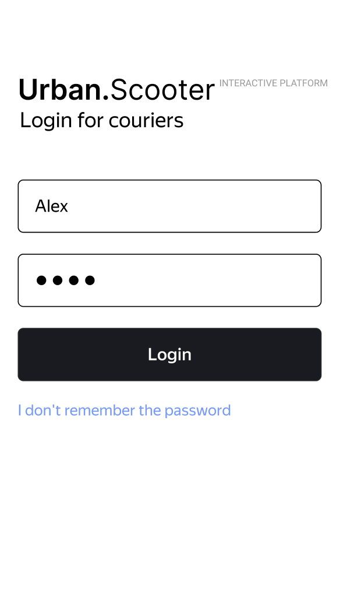
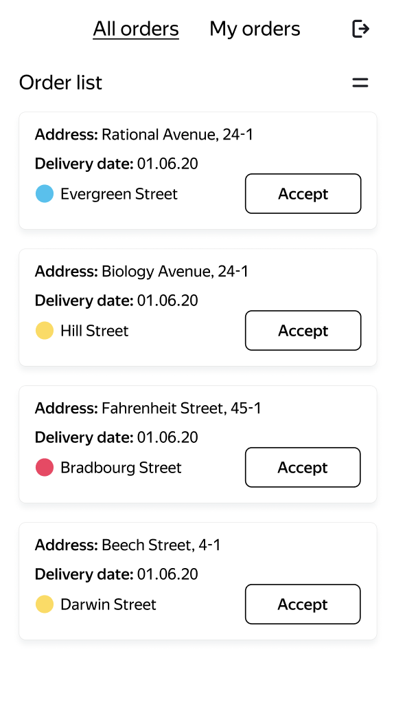
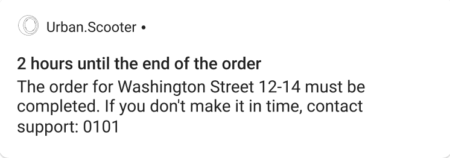
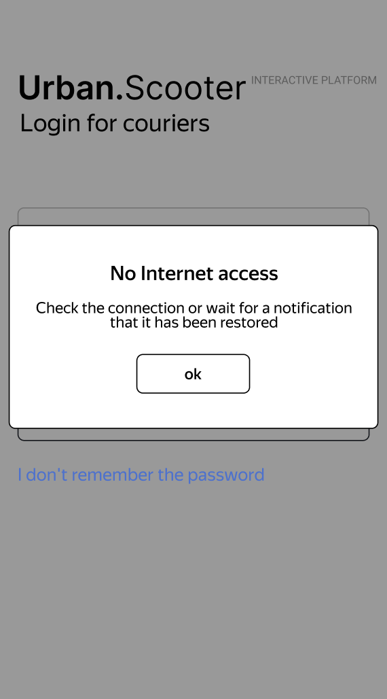

The mobile application is designed for couriers to accept and complete deliveries of orders placed by clients through the web application:

Testing this component required integrating several parts. For each test, I accessed the backend API to create a courier account, generated an order through the frontend web application, and linked everything together within the courier mobile app. The tests were conducted using the Android Studio emulator, specifically with API version 31 on a Google Pixel 6.

The Urban Scooters mobile application underwent extensive testing to evaluate its functionality, user interface, and performance across various conditions. A total of 28 test cases were executed, covering a wide range of scenarios typical users might encounter.
1. Notifications
A notification is triggered when there are two hours left to complete an order. The notification includes the text similar to: "2 hours to the end of the order. The order 'State St 1214' must be completed before time X."

2. Lack of Internet Connection
A "No Internet Connection" pop-up appears when the user taps any active button with no connection. This pop-up only disappears when the "OK" button is tapped.

Purpose
The goal of this testing process was to ensure the /api/v1/courier API endpoint functioned correctly.
Specifically, the tests aimed to verify that couriers could be created, authenticated, and deleted according to the API's requirements,
with all changes accurately reflected in the database.
Objectives
- Functional Validation: Ensure that the API correctly handles the creation, deletion, and login of couriers.
- Boundary and Negative Testing: Test the system's response to inputs that push boundaries or are invalid, and confirm that inappropriate inputs are rejected.
- Database Integrity: Validate that the API's actions are properly reflected in the PostgreSQL database, ensuring no data corruption or inconsistencies.
API Endpoints Tested
POST /api/v1/courier
This endpoint registers a new courier. It accepts:
- login: A unique username.
- password: A secure password that is hashed before being stored.
- firstName: The courier’s first name.
Expected Behavior: A successful POST request should create a courier in the database, ensuring the login is unique.
Duplicate or invalid data should result in an error.
DELETE /api/v1/courier/:id
This endpoint deletes a courier by their ID. Upon successful deletion:
- The courier’s record should be deleted from the Couriers table.
- Any associated orders in the Orders table should also be deleted.
Expected Behavior: Both the courier and their linked orders should be removed from the database.
POST /api/v1/courier/login
This endpoint handles courier authentication.
- Valid credentials should return a session token.
- Invalid credentials should return an error.
Tools and Resources Used
Postman
I used Postman to execute requests for creating, deleting, and logging in couriers, allowing me to validate the responses for each test case.
Swagger API Documentation
The Swagger API documentation provided crucial information on the API endpoints, expected input formats, and error handling.
PostgreSQL Database
I connected to the PostgreSQL database using SSH to verify the results of the API tests, running SQL queries to ensure that the expected changes occurred.
Executing Test Cases
For each API endpoint, I followed these steps:
- Sent a request using Postman with valid or invalid inputs.
- Verified the response status (e.g., 201 Created, 400 Bad Request).
- Queried the database to ensure the expected changes occurred.
- Tested edge cases, such as input fields with minimum or maximum character limits.
Handling Boundaries and Special Cases
Login Field Tests
Verified that the login field respected the character limits (2-10 characters).
Password Field Tests
Tested valid and invalid password lengths (4-10 characters).
FirstName Field Tests
Ensured that the firstName field accepted inputs between 2 and 10 characters and rejected symbols, numbers, and non-latin characters.
Courier Deletion and Linked Orders
Confirmed that deleting a courier also removed their linked orders, maintaining database consistency.
Test Results: Summary of Findings
Overall, I ran 40 tests, of which 16 failed due to input validation and data integrity issues.
View Full Test Report
Positive Tests
The majority of positive tests passed, confirming that couriers could be created, authenticated, and deleted, with all actions accurately reflected in the database.
Negative and Boundary Tests
Validation issues were discovered during testing:
- Invalid inputs were allowed, leading to improper records being created.
- Couriers were created with unacceptable values, including symbols, non-latin characters, and numeric values.
Critical Issue: Orders Not Deleted After Deleting Linked Courier
The most significant issue discovered during testing was the failure to delete linked orders after a courier was removed from the database:
- Issue: Deleting a courier did not remove their associated orders, leading to orphaned records.
- Impact: This failure poses a significant risk to data integrity, potentially causing confusion in order management and complicating future data retrieval.